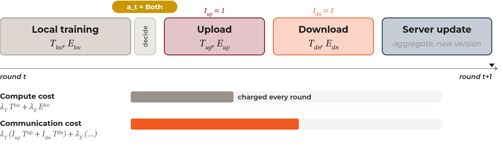
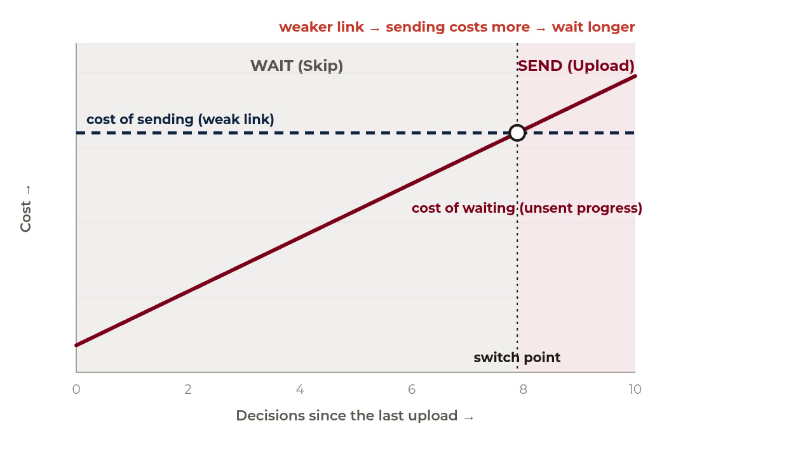
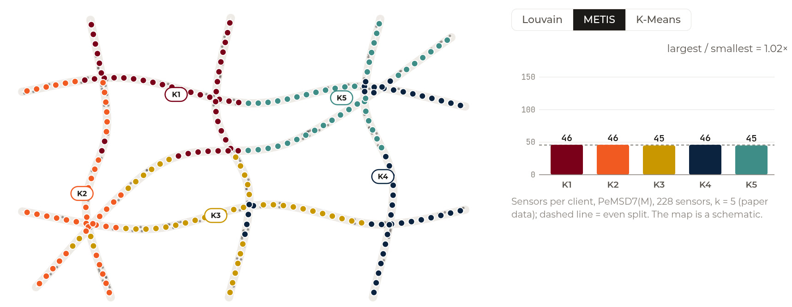
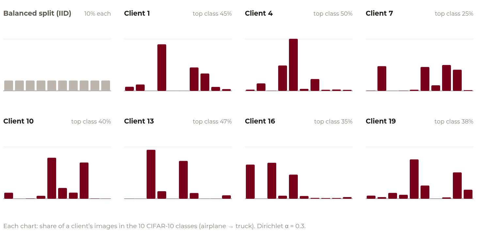
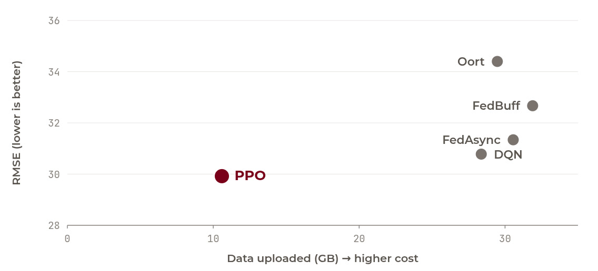
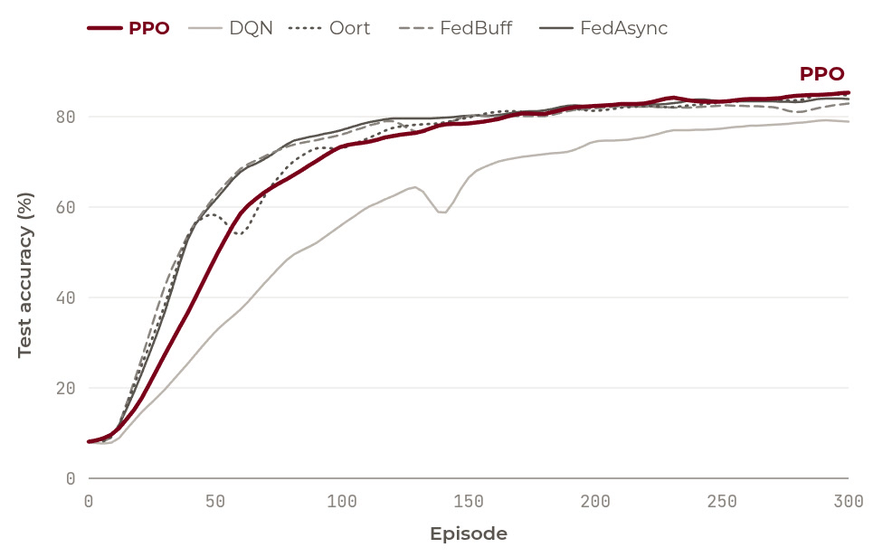
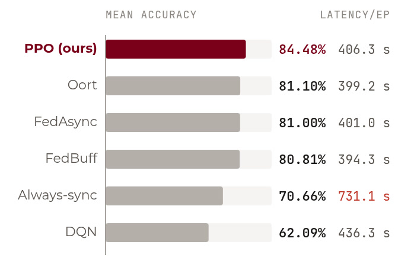
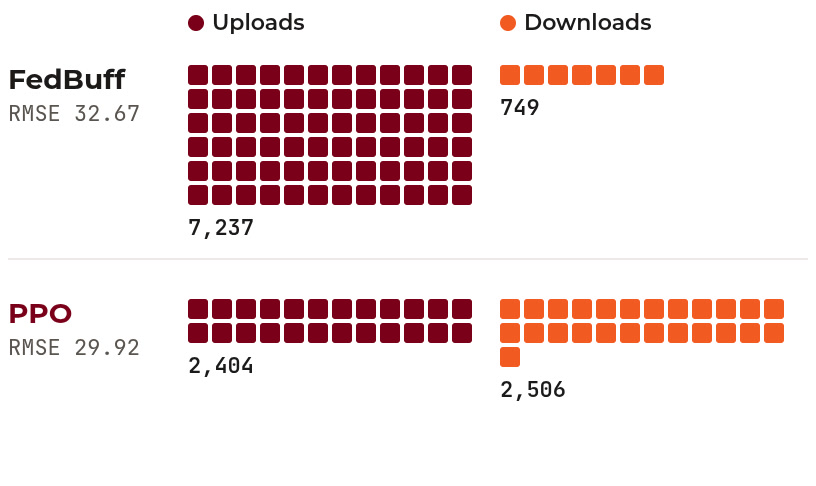
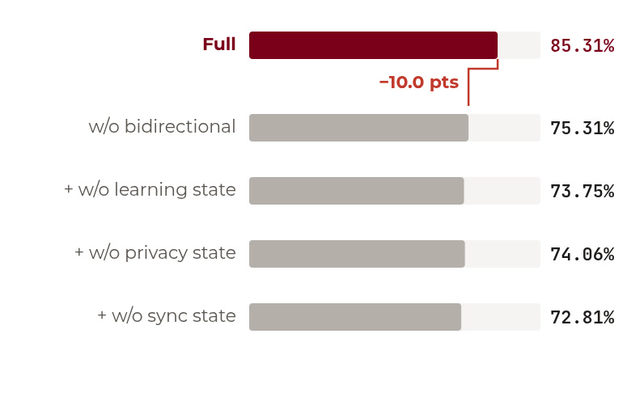
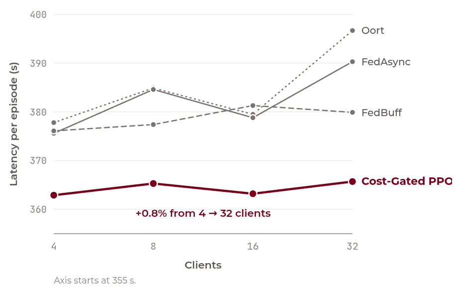

IEEE/ACM SEC 2026 · Santa Clara, California
Learning to Sync at the Edge:Client-side adaptive synchronization for Federated Learning
*University of Minnesota, Minneapolis †University of Texas at San Antonio
Every edge device decides for itself, moment to moment, whether to skip, upload, download or do both.
Background
Federated learning at the edge: train together, keep data local
- 1Server sends the global model
- 2Each device trains on its own data
- 3Devices upload model updates
- 4Server aggregates a new global model
- This exchange repeats every round, for every device, over wireless links that might be unreliable.
Motivation
Edge FL is limited by synchronization, not local training
Data stays on the device
Traffic and mobility data are trained where they are sensed.
Conditions keep changing
Bandwidth drifts, devices differ, and data streams evolve.
Every sync has a price
Each exchange spends latency, energy, and privacy budget.
On a fixed schedule every client pays for every sync. Client 2's degraded link makes each upload 3.3× longer, client 3 has barely changed its model, and client 4 is almost out of privacy budget.
Related work
Prior work decides at the server. We let each client decide.
Problem formulation
When should a client synchronize?
We treat each client's choice as a sequential decision problem with four actions.
Skip
Keep training; defer communication.
Upload
Send the local update to the server.
Download
Refresh the local model from the server.
Both
Upload, wait for aggregation, download.
At each decision the policy reads the client's local state and picks one action.
Each action costs time, energy, staleness, withheld progress and privacy.
Find the policy with the lowest long-run cost, not just the cheapest next step.
System design
Each client runs a lightweight scheduler beside its local model
Observe
The scheduler reads local learning state and environment state.
Decide
A small RL policy picks Skip, Upload, Download, or Both.
Synchronize
The server aggregates with a fixed rule; only the timing changes.
Environment
An event-driven simulator: clients act asynchronously
- Each row is one client. Blocks show what it is doing over time.
- Conditions vary. Availability is stable, cyclic, or bursty; the channel switches between good, medium, and degraded.
- ◆ marks a decision. The scheduler is asked only when a client is available and idle, never mid-transfer.
- No lockstep rounds. Time advances event by event.
System model
Training is always charged; communication only when the client syncs

Sending Δ bits at rate R takes Δ/R seconds and P·Δ/R joules, so transfer costs appear only when the client chooses them.
Objective
Skip or send? Waiting is cheap until unsent progress piles up

- Cost of waiting. Local progress that has not been uploaded, multiplied by the decisions since the last upload. It grows every time the client skips.
- Cost of sending. Set by the channel: on a degraded link the rate drops, so each upload takes longer and costs more energy.
- Where they cross, sending wins. PPO learns where to switch from the reward, including payoffs that only arrive later.
Policy
One small policy for every client: observe, score, mask, act
Four groups of local signals (communication, learning, synchronization, privacy) feed one small network that scores the actions. Actions the client cannot take, like uploading with no privacy budget left, are masked out.
Workload 1 · Traffic forecasting
From real traffic to a federated sensor graph
Real KITTI footage: every vehicle becomes a 3D box, the scene dissolves into the LiDAR scan, then pulls back to a freeway network whose detector stations become the nodes of a sensor graph.
Workload 1 · Client formation
METIS splits the sensor graph into balanced clients

Experiments: PeMS-08, 4 METIS clients, FedSTAE (STAEFormer backbone), 200 episodes.
Workload 2 · Image classification
CIFAR-10, split unevenly across 20 clients

Setup: ResNet-18 on 20 clients, 300 episodes. Baselines: FedAsync, FedBuff and Oort decide at the server; DQN (same inputs and mask as ours) and Always-sync decide at the client.
Results · Traffic (PeMS-08, 4 clients)
Traffic: lowest forecast error at about half the system cost

Results · Images (CIFAR-10, 20 clients)
Images: highest accuracy at server-baseline cost


+3.38 points over Oort (84.48% vs. 81.10%), with latency within 1.8% and energy within 0.8%. Always-sync reaches only 70.66%: syncing more is not the answer.
Analysis
Choosing direction and timing beats syncing less


Scale & overhead
Flat latency from 4 to 32 clients; 0.19 ms per decision

Cost-gated PPO is the lowest-latency method at every scale, moving only 0.8% from 4 to 32 clients. The policy is shared, so it does not grow with the number of clients.
Takeaways
Synchronization is a client-side control problem
- 1
Decide where the signals are
Channel, local progress, staleness, and privacy budget are all observed on the client.
- 2
Four actions, one small policy
Skip, upload, download, or both, chosen by a masked PPO policy with 20.4k parameters. The server rule is unchanged.
- 3
A better accuracy–cost trade-off
Traffic: best MAE/RMSE with 43% less latency, 52% less energy, 63% less data. Images: 84.48% vs. 81.10%.